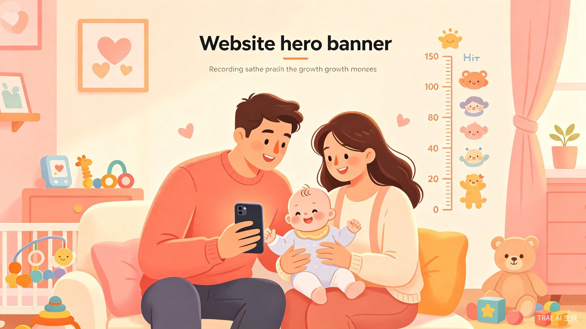

文字/语音随手记，AI 自动分析成长变化、生成睡前故事，让每一天的陪伴都有迹可循

新手父母在育儿过程中，常常因为忙碌而忘记记录宝宝的重要成长节点——第一次翻身、第一次叫妈妈、第一次走路。传统的日记或相册方式零散、难整理、易丢失，宝宝成长记录 正是为了解决这一痛点而生。
灵感来源于身边无数新手爸妈的真实反馈：手机里存了几千张宝宝照片，却找不到一张能清晰讲述成长故事的照片。我们希望能用 AI 技术，让记录变得简单、智能、有温度。
一款搭载 AI Agent 的智能育儿小程序/App，支持文字/语音随手记录，AI 自动分析成长变化并给出建议，还能根据当天记录生成专属睡前故事。
为每个宝宝创建专属成长档案，记录基本信息、成长里程碑、健康数据，一目了然
文字或语音随手记，无需复杂操作，一句话就能记录宝宝的日常点滴
基于每日记录，AI 自动生成成长变化分析和个性化育儿建议
根据当天记录，自动生成专属睡前故事，让宝宝的每一天都有温馨结尾
育儿经验不足，渴望记录宝宝每一个"第一次"，但缺乏系统工具
需要同时管理多个孩子的成长记录，希望在忙碌中不遗漏任何成长节点
想随时了解孙辈成长动态，但不会使用复杂的社交工具
日常家庭场景：宝宝吃饭、睡觉、玩耍、学说话等日常点滴；里程碑时刻：第一次翻身、爬行、走路、说话。用户只需一句话语音或文字输入，AI 自动完成记录与分析。
传统育儿日记需要专门时间写，忙碌的父母根本没精力坚持
记录了却不知道宝宝发展是否正常，缺少科学分析和建议
每天都要找新故事讲，内容千篇一律，无法与宝宝当天经历关联
照片、视频、日记分散在不同平台，无法形成完整的成长档案
记录吃饭、睡觉、玩耍是日常刚需，睡前故事更是每晚必用，形成高频使用习惯
每日记录自动积累，形成完整的成长档案，数据价值随时间递增
AI 自动分析成长变化、生成个性化建议和睡前故事，用户能直观感受到 AI 的价值
新手父母有强烈记录需求，且愿意为孩子的成长投入时间和金钱
让科技温暖育儿，让每一天的陪伴都有迹可循
中国每年约 1000 万新生儿，0-3 岁育儿市场规模超千亿。产品以会员订阅 + 增值服务（成长相册印刷、AI 育儿顾问）实现盈利，目标首年覆盖 50 万家庭
帮助新手父母科学育儿，缓解育儿焦虑。通过家庭共享功能促进隔代情感连接，让忙碌的现代家庭依然能紧密相连
语音/文字一句话记录，AI 自动完成分析、建议、故事生成，让父母把时间真正还给陪伴
为每个孩子创建独一无二的数字成长档案 + 专属睡前故事库，20 年后回看，是一份无法用金钱衡量的珍贵礼物